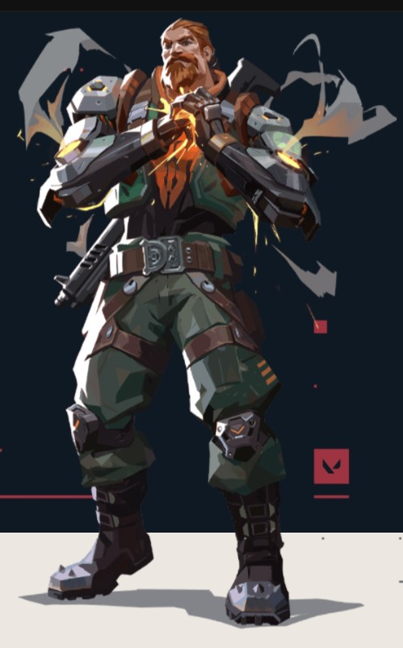

INITIATORS challenge angles by setting up their team to enter contested ground and push defenders away.

BREACH
The bionic Swede, fires powerful, targeted kinetic blasts to aggressively clear a path through enemy ground. The damage and disruption he inflicts ensures no fight is ever fair.
Q - FLASHPOINT
EQUIP a blinding charge. FIRE the charge to set fast-acting burst through the wall. The charge detonates to blind all players looking at it.
E - FAULT LINE
EQUIP a seismic blast. HOLD FIRE to increase the distance. RELEASE to set off the quake, dazing all players in its zone and in a line up to the zone.
C - AFTERSHOCK
EQUIP a fusion charge. FIRE the charge to set a slow-acting burst through the wall. The burst does heavy damage to anyone caught in its area.
X - ROLLING THUNDER
EQUIP a seismic charge. FIRE to send a cascading quake through all terrain in a large cone. The quake dazes and knocks up anyone caught in it.
EQUIP a blinding charge. FIRE the charge to set fast-acting burst through the wall. The charge detonates to blind all players looking at it.
E - FAULT LINE
EQUIP a seismic blast. HOLD FIRE to increase the distance. RELEASE to set off the quake, dazing all players in its zone and in a line up to the zone.
C - AFTERSHOCK
EQUIP a fusion charge. FIRE the charge to set a slow-acting burst through the wall. The burst does heavy damage to anyone caught in its area.
X - ROLLING THUNDER
EQUIP a seismic charge. FIRE to send a cascading quake through all terrain in a large cone. The quake dazes and knocks up anyone caught in it.
SOVA
Born from the eternal winter of Russia's tundra, Sova tracks, finds, and eliminates enemies with ruthless efficiency and precision. His custom bow and incredible scouting abilities ensure that even if you run, you cannot hide.
Q - SHOCK BOLT
EQUIP a bow with a shock bolt. FIRE to send the explosive forward, detonating upon collision and damaging players nearby. HOLD FIRE to extend the range of the projectile. ALTERNATE FIRE to add up to two bounces to this arrow.
E - RECON BOLT
EQUIP a bow with a recon bolt. FIRE to send the recon bolt forward, activating upon collision and revealing the location of nearby enemies caught in the line of sight of the bolt. HOLD FIRE to extend the range of the projectile. ALTERNATE FIRE to add up to two bounces to this arrow.
C - OWL DRONE
EQUIP an owl drone. FIRE to deploy and take control of movement of the drone. While in control of the drone, FIRE to shoot a marking dart. This dart will reveal the location of any player struck by the dart.
X - HUNTER’S FURY
EQUIP a bow with three long-range wall-piercing energy blasts. FIRE to release an energy blast in a line in front of Sova, dealing damage and revealing the location of enemies caught in the line. This ability can be RE-USED up to two more times while the ability timer is active.
EQUIP a bow with a shock bolt. FIRE to send the explosive forward, detonating upon collision and damaging players nearby. HOLD FIRE to extend the range of the projectile. ALTERNATE FIRE to add up to two bounces to this arrow.
E - RECON BOLT
EQUIP a bow with a recon bolt. FIRE to send the recon bolt forward, activating upon collision and revealing the location of nearby enemies caught in the line of sight of the bolt. HOLD FIRE to extend the range of the projectile. ALTERNATE FIRE to add up to two bounces to this arrow.
C - OWL DRONE
EQUIP an owl drone. FIRE to deploy and take control of movement of the drone. While in control of the drone, FIRE to shoot a marking dart. This dart will reveal the location of any player struck by the dart.
X - HUNTER’S FURY
EQUIP a bow with three long-range wall-piercing energy blasts. FIRE to release an energy blast in a line in front of Sova, dealing damage and revealing the location of enemies caught in the line. This ability can be RE-USED up to two more times while the ability timer is active.
KAY/O
KAY/O is a machine of war built for a single purpose: neutralizing radiants. His power to suppress enemy abilities cripples his opponents' capacity to fight back, securing him and his allies the ultimate edge.
Q - FLASH/DRIVE
EQUIP a flash grenade. FIRE to throw. The flash grenade explodes after a short fuse, blinding anyone in line of sight.
E - ZERO/POINT
EQUIP a suppression blade. FIRE to throw. The blade sticks to the first surface it hits, winds up, and suppresses anyone in the radius of the explosion.
C - FRAG/MENT
EQUIP an explosive fragment. FIRE to throw. The fragment sticks to the floor and explodes multiple times, dealing near lethal damage at the center with each explosion.
X - NULL/CMD
INSTANTLY overload with polarized radianite energy that empowers KAY/O and causes large energy pulses to emit from his location. Enemies hit with these pulses are suppressed for a short duration.
EQUIP a flash grenade. FIRE to throw. The flash grenade explodes after a short fuse, blinding anyone in line of sight.
E - ZERO/POINT
EQUIP a suppression blade. FIRE to throw. The blade sticks to the first surface it hits, winds up, and suppresses anyone in the radius of the explosion.
C - FRAG/MENT
EQUIP an explosive fragment. FIRE to throw. The fragment sticks to the floor and explodes multiple times, dealing near lethal damage at the center with each explosion.
X - NULL/CMD
INSTANTLY overload with polarized radianite energy that empowers KAY/O and causes large energy pulses to emit from his location. Enemies hit with these pulses are suppressed for a short duration.
SKYE
Hailing from Australia, Skye and her band of beasts trail-blaze the way through hostile territory. With her creations hampering the enemy, and her power to heal others, the team is strongest and safest by Skye’s side.
Q - TRAILBLAZER
EQUIP a Tasmanian tiger trinket. FIRE to send out and take control of the predator. While in control, FIRE to leap forward, exploding in a concussive blast and damaging directly hit enemies.
E - GUIDING LIGHT
EQUIP a hawk trinket. FIRE to send it forward. HOLD FIRE to guide the hawk in the direction of your crosshair. RE-USE while the hawk is in flight to transform it into a flash that plays a hit confirm if an enemy was within range and line of sight.
C - REGROWTH
EQUIP a healing trinket. HOLD FIRE to channel, healing allies in range and line of sight. Can be reused until her healing pool is depleted. Skye cannot heal herself.
X - SEEKERS
EQUIP a Seeker trinket. FIRE to send out three Seekers to track down the three closest enemies. If a Seeker reaches its target, it nearsights them.
EQUIP a Tasmanian tiger trinket. FIRE to send out and take control of the predator. While in control, FIRE to leap forward, exploding in a concussive blast and damaging directly hit enemies.
E - GUIDING LIGHT
EQUIP a hawk trinket. FIRE to send it forward. HOLD FIRE to guide the hawk in the direction of your crosshair. RE-USE while the hawk is in flight to transform it into a flash that plays a hit confirm if an enemy was within range and line of sight.
C - REGROWTH
EQUIP a healing trinket. HOLD FIRE to channel, healing allies in range and line of sight. Can be reused until her healing pool is depleted. Skye cannot heal herself.
X - SEEKERS
EQUIP a Seeker trinket. FIRE to send out three Seekers to track down the three closest enemies. If a Seeker reaches its target, it nearsights them.
DUELISTS are self-sufficient fraggers who their team expects, through abilities and skills, to get high frags and seek out engagements first.
JETT
Representing her home country of South Korea, Jett's agile and evasive fighting style lets her take risks no one else can. She runs circles around every skirmish, cutting enemies before they even know what hit them.
Q - UPDRAFT
INSTANTLY propel Jett high into the air.
E - TAILWIND
INSTANTLY propel Jett in the direction she is moving. If Jett is standing still, she will propel forward.
C - CLOUD BURST
INSTANTLY throw a projectile that expands into a brief vision-blocking cloud on impact with a surface. HOLD the ability key to curve the smoke in the direction of your crosshair.
X - BLADESTORM
EQUIP a set of highly accurate knives that recharge on killing an opponent. FIRE to throw a single knife at your target. ALTERNATE FIRE to throw all remaining daggers at your target.
INSTANTLY propel Jett high into the air.
E - TAILWIND
INSTANTLY propel Jett in the direction she is moving. If Jett is standing still, she will propel forward.
C - CLOUD BURST
INSTANTLY throw a projectile that expands into a brief vision-blocking cloud on impact with a surface. HOLD the ability key to curve the smoke in the direction of your crosshair.
X - BLADESTORM
EQUIP a set of highly accurate knives that recharge on killing an opponent. FIRE to throw a single knife at your target. ALTERNATE FIRE to throw all remaining daggers at your target.

REYNA
Forged in the heart of Mexico, Reyna dominates single combat, popping off with each kill she scores. Her capability is only limited by her raw skill, making her highly dependent on performance.
Q - DEVOUR
Enemies killed by Reyna leave behind Soul Orbs that last 3 seconds. INSTANTLY consume a nearby soul orb, rapidly healing for a short duration. Health gained through this skill exceeding 100 will decay over time. If EMPRESS is active, this skill will automatically cast and not consume the orb.
E - DISMISS
INSTANTLY consume a nearby soul orb, becoming intangible for a short duration. If EMPRESS is active, also become invisible.
C - LEER
EQUIP an ethereal destructible eye. ACTIVATE to cast the eye a short distance forward. The eye will Nearsight all enemies who look at it.
X - EMPRESS
INSTANTLY enter a frenzy, increasing firing speed, equip and reload speed dramatically. Scoring a kill renews the duration.
Enemies killed by Reyna leave behind Soul Orbs that last 3 seconds. INSTANTLY consume a nearby soul orb, rapidly healing for a short duration. Health gained through this skill exceeding 100 will decay over time. If EMPRESS is active, this skill will automatically cast and not consume the orb.
E - DISMISS
INSTANTLY consume a nearby soul orb, becoming intangible for a short duration. If EMPRESS is active, also become invisible.
C - LEER
EQUIP an ethereal destructible eye. ACTIVATE to cast the eye a short distance forward. The eye will Nearsight all enemies who look at it.
X - EMPRESS
INSTANTLY enter a frenzy, increasing firing speed, equip and reload speed dramatically. Scoring a kill renews the duration.
RAZE
Raze explodes out of Brazil with her big personality and big guns. With her blunt-force-trauma playstyle, she excels at flushing entrenched enemies and clearing tight spaces with a generous dose of “boom.”
Q - BLAST PACK
INSTANTLY throw a Blast Pack that will stick to surfaces. RE-USE the ability after deployment to detonate, damaging and moving anything hit. Raze isn't damaged by this ability, but will still take fall damage if launched up far enough.
E - PAINT SHELLS
EQUIP a cluster grenade. FIRE to throw the grenade, which does damage and creates sub-munitions, each doing damage to anyone in their range.
C - BOOM BOT
EQUIP a Boom Bot. FIRE will deploy the bot, causing it to travel in a straight line on the ground, bouncing off walls. The Boom Bot will lock on to any enemies in its frontal cone and chase them, exploding for heavy damage if it reaches them.
X - SHOWSTOPPER
EQUIP a rocket launcher. FIRE shoots a rocket that does massive area damage on contact with anything.
INSTANTLY throw a Blast Pack that will stick to surfaces. RE-USE the ability after deployment to detonate, damaging and moving anything hit. Raze isn't damaged by this ability, but will still take fall damage if launched up far enough.
E - PAINT SHELLS
EQUIP a cluster grenade. FIRE to throw the grenade, which does damage and creates sub-munitions, each doing damage to anyone in their range.
C - BOOM BOT
EQUIP a Boom Bot. FIRE will deploy the bot, causing it to travel in a straight line on the ground, bouncing off walls. The Boom Bot will lock on to any enemies in its frontal cone and chase them, exploding for heavy damage if it reaches them.
X - SHOWSTOPPER
EQUIP a rocket launcher. FIRE shoots a rocket that does massive area damage on contact with anything.
PHOENIX
Hailing from the U.K., Phoenix's star power shines through in his fighting style, igniting the battlefield with flash and flare. Whether he's got backup or not, he'll rush into a fight on his own terms.
Q - CURVE BALL
EQUIP a flare orb that takes a curving path and detonates shortly after throwing. FIRE to curve the flare orb to the left, detonating and blinding any player who sees the orb. ALTERNATE FIRE to curve the flare orb to the right.
E - HOT HANDS
EQUIP a fireball. FIRE to throw a fireball that explodes after a set amount of time or upon hitting the ground, creating a lingering fire zone that damages enemies.
C - BLAZE
EQUIP a flame wall. FIRE to create a line of flame that moves forward, creating a wall of fire that blocks vision and damages players passing through it. HOLD FIRE to bend the wall in the direction of your crosshair.
X - RUN IT BACK
INSTANTLY place a marker at Phoenix’s location. While this ability is active, dying or allowing the timer to expire will end this ability and bring Phoenix back to this location with full health.
EQUIP a flare orb that takes a curving path and detonates shortly after throwing. FIRE to curve the flare orb to the left, detonating and blinding any player who sees the orb. ALTERNATE FIRE to curve the flare orb to the right.
E - HOT HANDS
EQUIP a fireball. FIRE to throw a fireball that explodes after a set amount of time or upon hitting the ground, creating a lingering fire zone that damages enemies.
C - BLAZE
EQUIP a flame wall. FIRE to create a line of flame that moves forward, creating a wall of fire that blocks vision and damages players passing through it. HOLD FIRE to bend the wall in the direction of your crosshair.
X - RUN IT BACK
INSTANTLY place a marker at Phoenix’s location. While this ability is active, dying or allowing the timer to expire will end this ability and bring Phoenix back to this location with full health.
YORU
Japanese native, Yoru, rips holes straight through reality to infiltrate enemy lines unseen. Using deception and aggression in equal measure, he gets the drop on each target before they know where to look.
Q - BLIND SIDE
EQUIP to rip an unstable dimensional fragment from reality. FIRE to throw the fragment, activating a flash that winds up once it collides with a hard surface in the world.
E - GATECRASH
EQUIP to harness a rift tether FIRE to send the tether out moving forward ALT FIRE to place a tether in place ACTIVATE to teleport to the tether's location.
C - FAKEOUT
EQUIP an echo that mimics footsteps when activated FIRE to activate and send the echo forward ALT FIRE to place an echo in place USE the inactive echo to send it forward.
X - DIMENSIONAL DRIFT
EQUIP a mask that can see between dimensions. FIRE to drift into Yoru's dimension, unable to be affected or seen by enemies from the outside.
EQUIP to rip an unstable dimensional fragment from reality. FIRE to throw the fragment, activating a flash that winds up once it collides with a hard surface in the world.
E - GATECRASH
EQUIP to harness a rift tether FIRE to send the tether out moving forward ALT FIRE to place a tether in place ACTIVATE to teleport to the tether's location.
C - FAKEOUT
EQUIP an echo that mimics footsteps when activated FIRE to activate and send the echo forward ALT FIRE to place an echo in place USE the inactive echo to send it forward.
X - DIMENSIONAL DRIFT
EQUIP a mask that can see between dimensions. FIRE to drift into Yoru's dimension, unable to be affected or seen by enemies from the outside.
SENTINELS are defensive experts who can lockdown areas and watch flanks, both on attacker and defender rounds.
SAGE
The stronghold of China, Sage creates safety for herself and her team wherever she goes. Able to revive fallen friends and stave off aggressive pushes, she provides a calm center to a hellish fight.
Q - SLOW ORB
EQUIP a slowing orb. FIRE to throw a slowing orb forward that detonates upon landing, creating a lingering field that slows players caught inside of it.
E - HEALING ORB
EQUIP to harness a rift tether FIRE to send the tether out moving forward ALT FIRE to place a tether in place ACTIVATE to teleport to the tether's location.
C - BARRIER WALL
EQUIP a barrier orb. FIRE places a solid wall. ALT FIRE rotates the targeter.
X - RESURRECTION
EQUIP a resurrection ability. FIRE with your crosshairs placed over a dead ally to begin resurrecting them. After a brief channel, the ally will be brought back to life with full health.
EQUIP a slowing orb. FIRE to throw a slowing orb forward that detonates upon landing, creating a lingering field that slows players caught inside of it.
E - HEALING ORB
EQUIP to harness a rift tether FIRE to send the tether out moving forward ALT FIRE to place a tether in place ACTIVATE to teleport to the tether's location.
C - BARRIER WALL
EQUIP a barrier orb. FIRE places a solid wall. ALT FIRE rotates the targeter.
X - RESURRECTION
EQUIP a resurrection ability. FIRE with your crosshairs placed over a dead ally to begin resurrecting them. After a brief channel, the ally will be brought back to life with full health.
CYPHER
The Moroccan information broker, Cypher is a one-man surveillance network who keeps tabs on the enemy's every move. No secret is safe. No maneuver goes unseen. Cypher is always watching.
Q - CYBER CAGE
INSTANTLY toss the cyber cage in front of Cypher. Activate to create a zone that blocks vision and slows enemies who pass through it.
E - SPY CAM
EQUIP a spycam. FIRE to place the spycam at the targeted location. RE-USE this ability to take control of the camera’s view. While in control of the camera, FIRE to shoot a marking dart. This dart will reveal the location of any player struck by the dart.
C - TRAP WIRE
EQUIP a trapwire. FIRE to place a destructible and covert tripwire at the targeted location creating a line that spans between the placed location and the wall opposite. Enemy players who cross a tripwire will be tethered, revealed, and dazed after a short period if they do not destroy the device in time. This ability can be picked up to be REDEPLOYED.
X - NEURAL THEFT
INSTANTLY use on a dead enemy player in your crosshairs to reveal the location of all living enemy players.
INSTANTLY toss the cyber cage in front of Cypher. Activate to create a zone that blocks vision and slows enemies who pass through it.
E - SPY CAM
EQUIP a spycam. FIRE to place the spycam at the targeted location. RE-USE this ability to take control of the camera’s view. While in control of the camera, FIRE to shoot a marking dart. This dart will reveal the location of any player struck by the dart.
C - TRAP WIRE
EQUIP a trapwire. FIRE to place a destructible and covert tripwire at the targeted location creating a line that spans between the placed location and the wall opposite. Enemy players who cross a tripwire will be tethered, revealed, and dazed after a short period if they do not destroy the device in time. This ability can be picked up to be REDEPLOYED.
X - NEURAL THEFT
INSTANTLY use on a dead enemy player in your crosshairs to reveal the location of all living enemy players.
KILLJOY
The genius of Germany. Killjoy secures the battlefield with ease using her arsenal of inventions. If the damage from her gear doesn't stop her enemies, her robots' debuff will help make short work of them.
Q - ALARM BOT
EQUIP a covert Alarmbot. FIRE to deploy a bot that hunts down enemies that get in range. After reaching its target, the bot explodes, applying Vulernable. HOLD EQUIP to recall a deployed bot.
E - TURRET
EQUIP a Turret. FIRE to deploy a turret that fires at enemies in a 180 degree cone. HOLD EQUIP to recall the deployed turret.
C - NANO SWARM
EQUIP a Nanoswarm grenade. FIRE to throw the grenade. Upon landing, the Nanoswarm goes covert. ACTIVATE the Nanoswarm to deploy a damaging swarm of nanobots.
X - LOCKDOWN
EQUIP the Lockdown device. FIRE to deploy the device. After a long windup, the device Detains all enemies caught in the radius. The device can be destroyed by enemies.
EQUIP a covert Alarmbot. FIRE to deploy a bot that hunts down enemies that get in range. After reaching its target, the bot explodes, applying Vulernable. HOLD EQUIP to recall a deployed bot.
E - TURRET
EQUIP a Turret. FIRE to deploy a turret that fires at enemies in a 180 degree cone. HOLD EQUIP to recall the deployed turret.
C - NANO SWARM
EQUIP a Nanoswarm grenade. FIRE to throw the grenade. Upon landing, the Nanoswarm goes covert. ACTIVATE the Nanoswarm to deploy a damaging swarm of nanobots.
X - LOCKDOWN
EQUIP the Lockdown device. FIRE to deploy the device. After a long windup, the device Detains all enemies caught in the radius. The device can be destroyed by enemies.
CONTROLLERS are experts in slicing up dangerous territory to set their team for success.
OMEN
A phantom of a memory, Omen hunts in the shadows. He renders enemies blind, teleports across the field, then lets paranoia take hold as his foe scrambles to learn where he might strike next.
Q - PARANOIA
INSTANTLY fire a shadow projectile forward, briefly reducing the vision range of all players it touches. This projectile can pass straight through walls.
E - DARK COVER
EQUIP a shadow orb and see its range indicator. FIRE to throw the shadow orb to the marked location, creating a long-lasting shadow sphere that blocks vision. HOLD ALTERNATE FIRE while targeting to move the marker further away. HOLD the ability key with targeting to move the marker closer.
C - SHROUDED STEP
EQUIP a shadow walk ability and see its range indicator. FIRE to begin a brief channel, then teleport to the marked location.
X - FROM THE SHADOWS
EQUIP a tactical map. FIRE to begin teleporting to the selected location. While teleporting, Omen will appear as a Shade that can be destroyed by an enemy to cancel his teleport.
INSTANTLY fire a shadow projectile forward, briefly reducing the vision range of all players it touches. This projectile can pass straight through walls.
E - DARK COVER
EQUIP a shadow orb and see its range indicator. FIRE to throw the shadow orb to the marked location, creating a long-lasting shadow sphere that blocks vision. HOLD ALTERNATE FIRE while targeting to move the marker further away. HOLD the ability key with targeting to move the marker closer.
C - SHROUDED STEP
EQUIP a shadow walk ability and see its range indicator. FIRE to begin a brief channel, then teleport to the marked location.
X - FROM THE SHADOWS
EQUIP a tactical map. FIRE to begin teleporting to the selected location. While teleporting, Omen will appear as a Shade that can be destroyed by an enemy to cancel his teleport.
ASTRA
Ghanaian Agent Astra harnesses the energies of the cosmos to reshape battlefields to her whim. With full command of her astral form and a talent for deep strategic foresight, she's always eons ahead of her enemy's next move.
Q - NOVA PULSE
Place Stars in Astral Form (X) ACTIVATE a Star to detonate a Nova Pulse. The Nova Pulse charges briefly then strikes, concussing all players in its area.
E - NEBULA
Place Stars in Astral Form (X) ACTIVATE a Star to transform it into a Nebula (smoke). Use (F) on a Star to Dissipate it, returning the star to be placed in a new location after a delay. Dissipate briefly forms a fake Nebula at the Star’s location before returning.
C - GRAVITY WELL
Place Stars in Astral Form (X) ACTIVATE a Star to form a Gravity Well. Players in the area are pulled toward the center before it explodes, making all players still trapped inside fragile.
X - ASTRAL FORM / COSMIC DIVIDE
ACTIVATE (X) to enter Astral Form where you can place Stars with PRIMARY FIRE. Stars can be reactivated later, transforming them into a Nova Pulse, Nebula, or Gravity Well. When Cosmic Divide is charged, use SECONDARY FIRE in Astral Form to begin aiming it, then PRIMARY FIRE to select two locations. An infinite Cosmic Divide connects the two points you select. Cosmic Divide blocks bullets and heavily dampens audio.
Place Stars in Astral Form (X) ACTIVATE a Star to detonate a Nova Pulse. The Nova Pulse charges briefly then strikes, concussing all players in its area.
E - NEBULA
Place Stars in Astral Form (X) ACTIVATE a Star to transform it into a Nebula (smoke). Use (F) on a Star to Dissipate it, returning the star to be placed in a new location after a delay. Dissipate briefly forms a fake Nebula at the Star’s location before returning.
C - GRAVITY WELL
Place Stars in Astral Form (X) ACTIVATE a Star to form a Gravity Well. Players in the area are pulled toward the center before it explodes, making all players still trapped inside fragile.
X - ASTRAL FORM / COSMIC DIVIDE
ACTIVATE (X) to enter Astral Form where you can place Stars with PRIMARY FIRE. Stars can be reactivated later, transforming them into a Nova Pulse, Nebula, or Gravity Well. When Cosmic Divide is charged, use SECONDARY FIRE in Astral Form to begin aiming it, then PRIMARY FIRE to select two locations. An infinite Cosmic Divide connects the two points you select. Cosmic Divide blocks bullets and heavily dampens audio.
BRIMSTONE
Joining from the USA, Brimstone's orbital arsenal ensures his squad always has the advantage. His ability to deliver utility precisely and from a distance make him an unmatched boots-on-the-ground commander.
Q - INCENDIARY
EQUIP an incendiary grenade launcher. FIRE to launch a grenade that detonates as it comes to a rest on the floor, creating a lingering fire zone that damages players within the zone.
E - SKY SMOKE
EQUIP a tactical map. FIRE to set locations where Brimstone’s smoke clouds will land. ALTERNATE FIRE to confirm, launching long-lasting smoke clouds that block vision in the selected area.
C - STIM BEACON
EQUIP a stim beacon. FIRE to toss the stim beacon in front of Brimstone. Upon landing, the stim beacon will create a field that grants players RapidFire.
X - ORBITAL STRIKE
EQUIP a tactical map. FIRE to launch a lingering orbital strike laser at the selected location, dealing high damage-over-time to players caught in the selected area.
EQUIP an incendiary grenade launcher. FIRE to launch a grenade that detonates as it comes to a rest on the floor, creating a lingering fire zone that damages players within the zone.
E - SKY SMOKE
EQUIP a tactical map. FIRE to set locations where Brimstone’s smoke clouds will land. ALTERNATE FIRE to confirm, launching long-lasting smoke clouds that block vision in the selected area.
C - STIM BEACON
EQUIP a stim beacon. FIRE to toss the stim beacon in front of Brimstone. Upon landing, the stim beacon will create a field that grants players RapidFire.
X - ORBITAL STRIKE
EQUIP a tactical map. FIRE to launch a lingering orbital strike laser at the selected location, dealing high damage-over-time to players caught in the selected area.
VIPER
The American chemist, Viper deploys an array of poisonous chemical devices to control the battlefield and cripple the enemy's vision. If the toxins don't kill her prey, her mind games surely will.
Q - POISON CLOUD
EQUIP a gas emitter. FIRE to throw the emitter that perpetually remains throughout the round. RE-USE the ability to create a toxic gas cloud at the cost of fuel. This ability can be RE-USED more than once and can be picked up to be REDEPLOYED.
E - TOXIC SCREEN
EQUIP a gas emitter launcher. FIRE to deploy a long line of gas emitters. RE-USE the ability to create a tall wall of toxic gas at the cost of fuel. This ability can be RE-USED more than once.
C - SNAKE BITE
EQUIP a chemical launcher. FIRE to launch a canister that shatters upon hitting the floor, creating a lingering chemical zone that damages and slows enemies.
X - VIPER'S PIT
EQUIP a chemical sprayer. FIRE to spray a chemical cloud in all directions around Viper, creating a large cloud that reduces the vision range and maximum health of players inside of it.
EQUIP a gas emitter. FIRE to throw the emitter that perpetually remains throughout the round. RE-USE the ability to create a toxic gas cloud at the cost of fuel. This ability can be RE-USED more than once and can be picked up to be REDEPLOYED.
E - TOXIC SCREEN
EQUIP a gas emitter launcher. FIRE to deploy a long line of gas emitters. RE-USE the ability to create a tall wall of toxic gas at the cost of fuel. This ability can be RE-USED more than once.
C - SNAKE BITE
EQUIP a chemical launcher. FIRE to launch a canister that shatters upon hitting the floor, creating a lingering chemical zone that damages and slows enemies.
X - VIPER'S PIT
EQUIP a chemical sprayer. FIRE to spray a chemical cloud in all directions around Viper, creating a large cloud that reduces the vision range and maximum health of players inside of it.